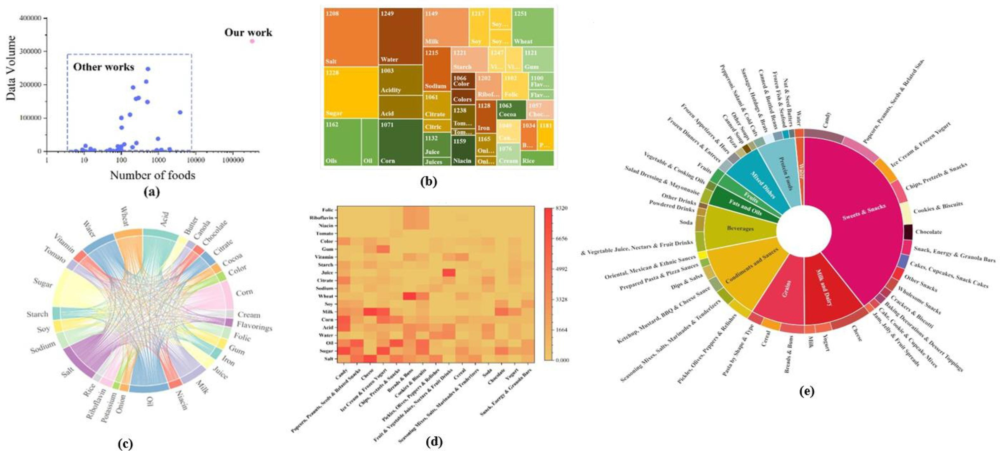

Deep Learning Accurately Predicts Food Categories and Nutrients Based on Ingredient Statements
Food Chemistry, 2022

Abstract
Ingredient statements can indicate food category and nutrient composition, but manually decoding long ingredient lists is challenging. We develop a deep-learning framework that predicts food categories and nutrient values directly from ingredient statements. The model captures semantic and compositional patterns in ingredient text and significantly outperforms conventional baselines on large-scale food datasets. Results show that ingredient statements contain strong predictive signals for both category identification and nutrient estimation, supporting automated nutrition analysis and food-data quality improvement.
Resources
Citation
@inproceedings{MZLYSMWA22,
author = {Peihua Ma and Zhikun Zhang and Ying Li and Ning Yu and Jiping Sheng and Hande Küçük McGinty and Qin Wang and Jaspreet KC Ahuja},
title = {{Deep Learning Accurately Predicts Food Categories and Nutrients Based on Ingredient Statements}},
booktitle = {{Food Chemistry}},
publisher = {Elsevier},
year = {2022},
}